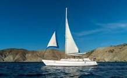

- Barcos de investigación
- Barcos de crucero
- Barcos de travesía
| Pesqueros | De recreo | De carga | |
| Clases | Crucero de pesca |
Velero  | Buque de carga general |
| Catamarán | Yate | Buque Portacontenedor | |
| Barco cabinado pequeño | Lancha | Buque Granelero | |
| Otros tipos de barcos | |||
|
|||